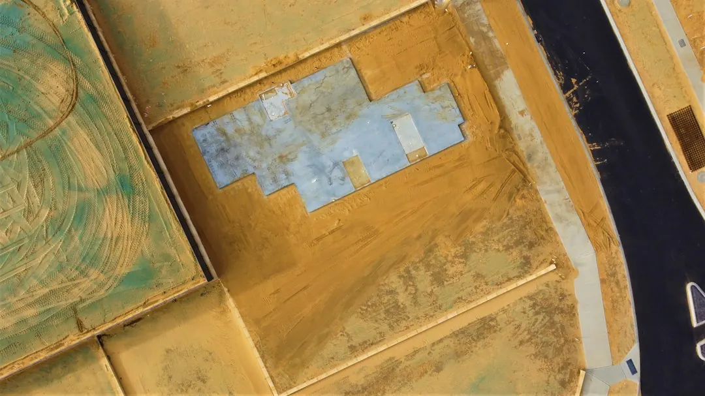

For homeowners comparing bathroom waterproofing perth options, the useful questions concern moisture sources, membrane scope, access, curing and the paperwork supplied when work is complete.
Bathroom Waterproofing Perth Explained
Waterproofing Perth advises homeowners to begin with what they can see rather than trying to diagnose a leak. A stained ceiling below a bathroom, loose tiles, a musty smell, flaking paint or a puddle at the base of a wall gives a contractor a useful starting point. Water can appear away from where it entered.
Record the affected room, the surface showing moisture and whether the issue follows showering or rain. For a renovation, note whether the bathroom is new, being rebuilt or retaining existing tiles. A short description and suburb are enough for an initial enquiry.
- Describe the visible symptom and where it appears.
- State whether the job is repair work or part of a renovation.
- Ask what inspection is needed before the cause and scope are confirmed.
What the membrane quote should identify
A useful bathroom quote names the areas being treated and explains what happens before tiling. The published service description refers to a compliant membrane for new and renovated bathrooms, applied and fully cured before tiles are installed. For rebuilt shower recesses, the scope may include falls, waterstops, membrane coats and flood testing.
Ask whether old tiles or membrane must be removed, whether repairs underneath are included and which parts of the room are in scope. Access can affect the work where existing finishes must be opened. Quotes based on different removal or preparation assumptions are not directly comparable.
Check what membrane information, testing records and completion documents will be supplied. A broad description such as wet-area repairs does not explain enough about the finished job.
Indoor work and outdoor exposure
Bathroom and shower work is less exposed to weather, although each membrane coat still needs curing before tiles go down. Balconies, retaining walls and rendered external walls require suitable dry surfaces for membrane application and curing, so wet Perth winter days can delay outdoor work.
A balcony may leak into a room or garage below. A retaining wall or planter box may weep, stain or push damp towards the house. Ask whether the proposed scope addresses drainage as well as waterproofing where that is relevant. Exposed balconies and walls also face hot, dry summers followed by heavy winter rain, which affects sealants, grout and coatings.
Compare quotes and contract documents
The price depends on the area, access, removal of old tiles or membrane and repairs found underneath. Ask each contractor to separate preparation, membrane work, testing, reinstatement and provisional repairs. This makes different scopes easier to compare.
For a contract covered by the Home Building Contracts Act, the homeowner should receive the Notice for the Home Owner before signing. The deposit is capped at 6.5%, with later payments only for work done or materials supplied. The published guidance also says defects reported in writing within four months of practical completion must be fixed at no cost.
Keep the quote, notice, payment records and completion paperwork together. If a defect appears, describe its location in writing and retain a copy of the report.
Who this guide applies to
This guide is for Perth homeowners planning a new or renovated bathroom, investigating a leaking shower or dealing with moisture around a balcony, basement, retaining wall or rendered exterior wall. It also applies when a ceiling, wall or garage below a wet area shows a symptom but the entry point is uncertain.
It does not determine whether a particular membrane system is suitable. The next useful step is to describe the room or structure, visible symptom, suburb and condition of existing tiles or finishes. For a separate outdoor decision path, read this guide to balcony waterproofing in Perth.
- Describe the symptom. Record the room, surface, visible moisture and whether the issue follows showering or rain.
- Define the project. State whether the work is a new bathroom, renovation, leaking shower repair or outdoor repair.
- Compare the scope. Check preparation, membrane areas, testing, curing, reinstatement and completion paperwork in each quote.
- Review the contract. Read the homeowner notice, deposit terms, payment stages and written defect process before signing.
| Situation | Useful question | Timing consideration |
|---|---|---|
| Bathroom renovation | Which areas receive the membrane, and when is it cured? | Tiling follows the required curing period. |
| Leaking balcony | Is water entering the room or garage below? | Outdoor surfaces need suitable dry conditions. |
| Retaining wall | Does the scope include drainage as well as waterproofing? | Access and exposed conditions may affect the job. |
This guide covers symptom checks, bathroom membrane scopes, outdoor timing, quote comparisons and homeowner contract questions in Perth.